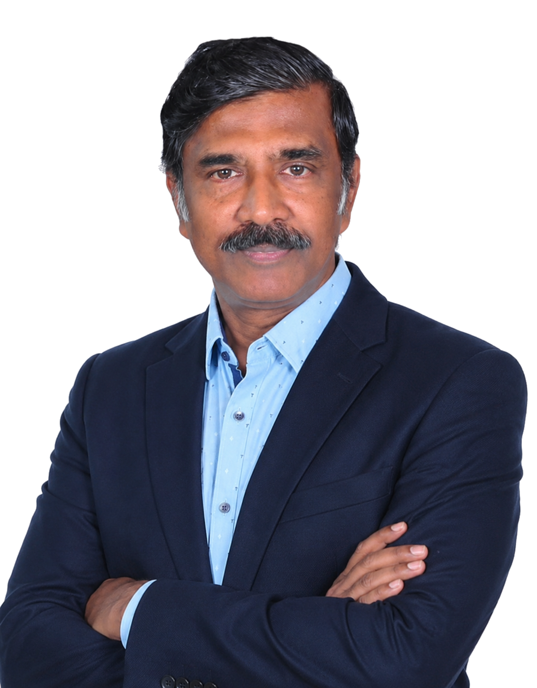

Quality, Operations & Regulatory
Alphonse Rajee Michael
Executive Committee Member | Safeguarding Operational, Process & Governance Risks | System Audit | Quality, Food Safety & Regulatory Compliance
33 years across Marico, PepsiCo India, Kraft Heinz and Del Monte Foods, building the systems that keep FMCG operations compliant, resilient and audit-ready — from shop-floor quality control to Pan-India regulatory governance.

Professional Positioning
Operational risk rarely announces itself. It shows up as a missed audit finding, a vendor gap, a compliance detail deferred one quarter too many — long before it reaches a balance sheet.
Alphonse works with boards, executive committees and senior operating leadership across FMCG and food manufacturing to find that risk early — in quality systems, plant operations, supply chain, and regulatory posture — and to build the governance discipline that keeps it from resurfacing.
His expertise spans four areas built over 33 years: quality systems and audit, greenfield plant commissioning, regulatory compliance across domestic and export operations, and operational/supply-chain excellence.
Biography & Philosophy
Thirty-three years in FMCG and food manufacturing, starting as a trainee chemist in edible oil refining in 1992 with South India Viscose, then Marico, PepsiCo India and Kraft Heinz, followed by 14 years as Vice President of Technical, Quality & Regulatory Affairs at Del Monte Foods, leading greenfield commissioning at Hosur and Ludhiana. Since November 2024, Co-Founder at Seeli Terra Taste.
Operational complacency builds invisible fragility long before financial metrics reveal it. I encourage organizations on governance to enforce continuous improvement discipline even if the current situation is comfortable. What we measure can be improved, and what is improved needs to be measured, to set new heights and open new horizons before disruption exposes the weakness.
As an Executive Committee member, safeguarding manufacturing and FMCG enterprises from systemic operational and process risk as well as opportunities, thereby strategizing to prevent risks and enhancing organizational efficiency, growth and sustained success in the short and long term.
Translating the corporate vision and strategies into SMART business goals and ensuring execution. Ensuring operational efficiency and cost optimization by leveraging effective supply chain management, planning, lean, Six Sigma, 5S and TPM techniques, technology upgradation, performance monitoring, and improvement through KPIs.
A certified lead auditor for ISO and FSSC 22000, responsible for quality management system implementation of food safety systems, and reengineering process improvements for Pan-India operations of own and co-manufacturing / 3P facilities.
Team building — leading teams across production, maintenance, quality, HR, finance, EHS, purchase, warehouse and SCM — through team morale, and creating future leaders through training, mentoring and coaching talent.
Compliance with regulatory aspects like FSSAI, Factory Inspectorate, Legal Metrology, Pollution Control Board, plastic waste management and EPR compliances, and taking proactive measures on the evolving regulatory ecosystem.
Led greenfield projects for Del Monte Foods' South and North operations, establishing and starting up new operations, systems and processes that increased revenue by more than ₹500 crore.
Mastery across product ranges including tomato ketchup, sauces, mayonnaise and variants, fruit and carbonated beverages, canned fruits, pasta, edible oil refining, olives and olive oils, dairy, tree nuts, backward integration of farming operations, fresh operations and personal care products.
Delivered annual recurring savings of more than ₹2 crore through process reengineering and ₹6 crore through conversion cost reduction and yield improvement.
Customer focus, product and system compliance to standards across QSR and export channels. SAP system implementation and leveraging MIS for business process improvements.
Career Record
Co-Founder
Seeli Terra Taste
VP & EC – Technical, Operations, Food Safety & Regulatory
Del Monte Foods
Manager, Quality Assurance
Marico Limited
Manager, Quality Assurance
Kraft Heinz
Head Process
Marico Limited
QA Executive
PepsiCo India
QA Executive
Marico Limited
Internship Trainee
South India Viscose
Strategic Focus Areas
Governance Expertise
Board and Executive Committee governance — embedding ESG-aligned practices and risk oversight into business development, strategy and long-term growth decisions.
Greenfield Commissioning
Site selection, process design and startup for state-of-the-art manufacturing facilities, end to end.
Quality Systems, Audit & Regulatory Compliance
ISO 9001 / FSSC 22000 lead auditor and HACCP food-safety program design, alongside FSSAI, Legal Metrology, Pollution Control Board and EPR compliance across domestic and export portfolios.
Operation Excellence and Supply Chain Management
Lean, Six Sigma, 5S and TPM-driven process re-engineering, supply chain planning, yield improvement and conversion cost reduction.
Quantified Impact
Thought Leadership
“Mastering the details, ensure success.”
— A. Rajee MichaelStrategic Insights
Vendor dependency is an underestimated risk
Scaling FMCG manufacturing through contract manufacturing units means the quality and process discipline of a partner facility becomes your own. Establishing 8 CMUs in the first year and 5 more in the second, at Marico, meant building that discipline in from day one rather than auditing it in afterward.
Savings hide in packaging and yield until someone looks
A two-year total cost management programme across packaging and operations delivered ₹60 lakh in savings; a parallel HDPE bottle weight-reduction project recovered a further ₹32 lakh in salvaged oils. Neither shows up until the process is actually re-examined, not just re-audited.
Regulatory compliance is a moving target, not a checklist
FSSAI, Legal Metrology, Pollution Control Board and EPR requirements evolve continuously. Systems built to meet them need to be built to evolve ahead of enforcement, not scramble to catch up after it.
Ideal Partnerships
Engagement Model
Open to advisory conversations, executive committee and governance roles, and select partnership discussions across FMCG, food manufacturing and quality governance. Engagements are shaped around the specific risk, audit, or operational challenge at hand — from a single strategic conversation to an ongoing advisory relationship.